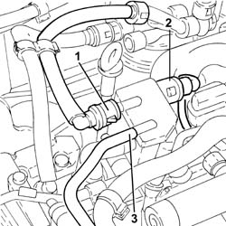
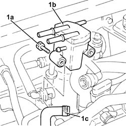

1060F50 FUEL RETURN MANIFOLD PIPE - R&R
- Path
- Procedures > 10 ENGINE > 1060 DIESEL FUEL INJECTION SYSTEM > 1060F INJECTORS AND LINES > 1060F50 FUEL RETURN MANIFOLD PIPE - R&R
- Kind
- repair procedure (removal / refitting; the operation number is the code)
- Applies to
- engines: 2.4 JTD 20V; all production periods
- Interactive page
- https://sloeber94.github.io/elrnDB-lThss/en/#/850543
Applies to: engines: 2.4 JTD 20V; all production periods
 Removing
Removing
 Refitting
RefittingSee in Op. 7040D50 ENGINE COMPARTMENT UPPER SOUND INSULATION SHIELD - R.R.
See in Op. 1016A10 SOUND-PROOFING COVER - R.R.
1. Disconnect the rapid connector for the fuel return pipe from the fuel filter, fuel return manifold pipe side.
2. Disconnect the rapid connector for the fuel return pipe to the tank, fuel return manifold pipe side.
3. Disconnect the pipe from the injectors to the fuel return manifold, fuel return manifold side.

Applies to: engines: 2.4 JTD 20V; all production periods
1. Unscrew bolts (1a) and remove the fuel return manifold pipe (1b) after disconnecting the fuel return pipe from the pressure pump (1c).

Applies to: engines: 2.4 JTD 20V; all production periods
Refitting
Removing- Connect the fuel return pipe from the pressure pump to the fuel return manifold pipe.
- Fit the fuel return manifold pipe and secure with bolts.
- Connect the pipe from the injectors to the fuel return manifold pipe, fuel return manifold side.
- Connect the rapid connector for the fuel return pipe to the tank, fuel return manifold pipe side.
- Connect the rapid connector for the fuel return pipe from the fuel filter, fuel return manifold pipe side.
See in Op. 1016A10 SOUND-PROOFING COVER - R.R.
See in Op. 7040D50 ENGINE COMPARTMENT UPPER SOUND INSULATION SHIELD - R.R.